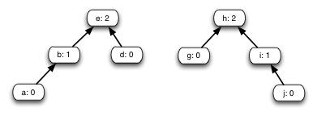

Disjoint sets

1. State of the Union
Show the result of Union(e,j) on this forest.

2. Iterative Find-Set
Find-Set as written in the text is not tail recursive, so a compiler won’t be able to automatically generate efficient iterative executable code. Write an iterative version of Find-Set.
3. Connected-Components

During the execution of Connected-Components on an undirected graph G=(V,E) with k connected components,
**(a) How many times is Find-Set called directly by Connected-Components? **
**(b) How many times is Union called directly by Connected-Components? **
Express your answer in terms of V, E and k (but NOT asymptotic notation). (Hint: solve for k=1 first and then think about what happens when k=2.)